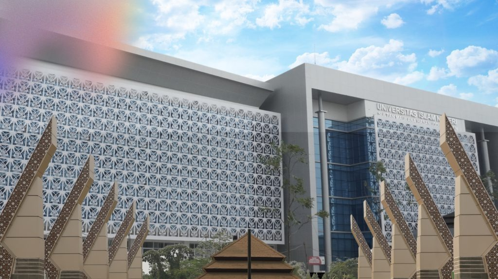

"Kenali, Catat, dan Lestarikan Biodiversitas Kampus"
UIN Sultan Maulana Hasanuddin Banten
Platform lengkap untuk pendataan, edukasi, dan aksi konservasi biodiversitas kampus.
Peta interaktif dengan titik-titik lokasi flora, fauna, dan area konservasi di kampus.
→Pindai QR code pada tanaman atau titik biodiversitas untuk info lengkap spesies.
→Catat dan laporkan temuan spesies baru dengan fitur citizen science berbasis AI.
→Ikuti program penanaman, pelestarian, dan kegiatan konservasi bersama mahasiswa.
→Materi edukasi tentang krisis iklim, ekosistem, dan peran biodiversitas kampus.
→Temuan-temuan spesies terbaru yang dilaporkan oleh relawan mahasiswa di kampus.
Ketahui kontribusi emisi karbon harianmu dan bagaimana biodiversitas UIN Banten membantu menyerapnya untuk menyelamatkan planet kita.
Hitung emisi mingguan perjalananmu ke UIN
Peningkatan suhu mikro di wilayah Serang dan Banten secara langsung mendegradasi ekosistem. Flora lokal seperti pohon Tanjung dan Kamboja mengalami pergeseran musim berbunga, sementara spesies burung seperti Kutilang dan Jalak Kerbau semakin kesulitan menemukan air bersih dan naungan rimbun untuk bersarang.
UIN Sultan Maulana Hasanuddin Banten mengintegrasikan Hutan Mini dan Kebun Biologi sebagai benteng mitigasi krisis iklim. Dengan ratusan pohon rindang terdata, kawasan ini menyerap puluhan ton CO₂ per tahun, menjaga kelembapan udara mikro kampus, dan mencegah bencana erosi permukaan tanah saat musim penghujan ekstrim melanda.
Setiap pohon yang kamu laporkan, setiap burung yang kamu potret, membantu ilmuwan mengumpulkan data klimatologi lingkungan mikro kampus. Laporkan temuan spesies baru, kurangi perjalanan emisi bahan bakar fosil, dan berpartisipasi aktif dalam kegiatan Aksi Hijau penanaman pohon.
Bergabunglah dengan lebih dari 215 relawan mahasiswa dalam menjaga dan melestarikan biodiversitas di lingkungan kampus UIN Sultan Maulana Hasanuddin Banten.